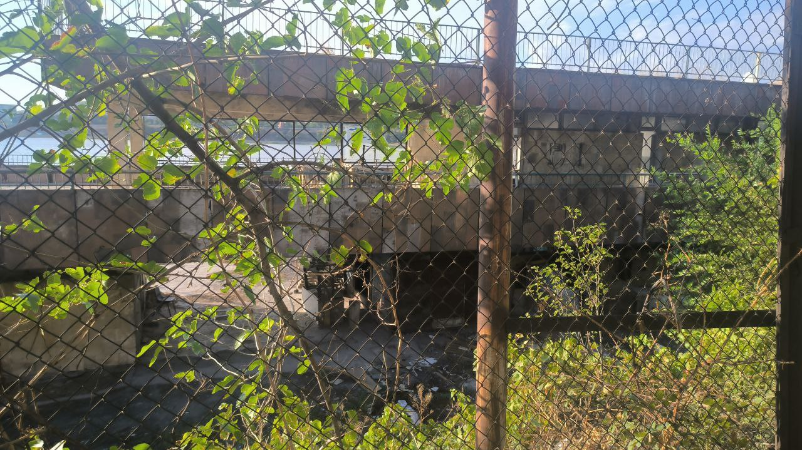
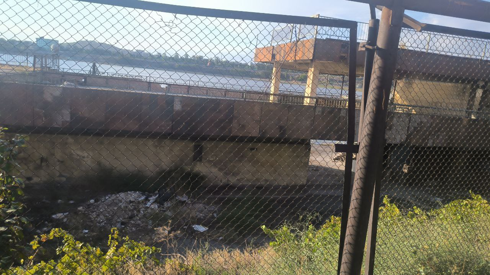

This place I have not visited yet, but some of my friends were there.
According to their impressions: it is not big building, but there are some interesting objects.
For instance: there is ferry framework and ship's helm on the second floor.
On the other hand, this construction is a part of another building, which is nowadays a hotel.
Hence you should be careful and attentive not to get caught. Also do not be fishy, while you are passing the hotel.
